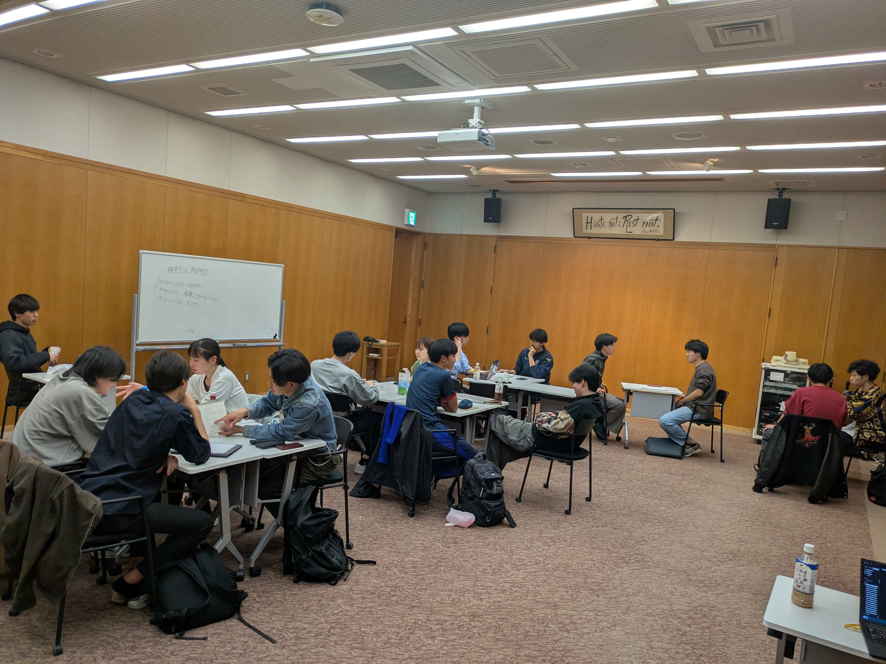
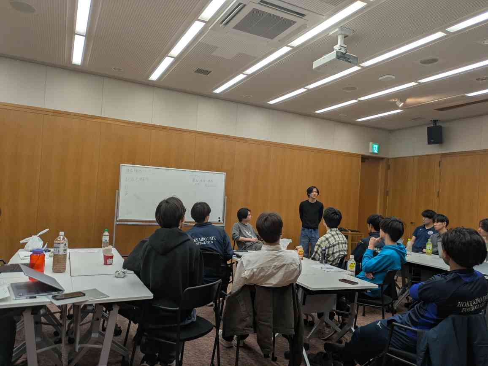

チームを強くし、次のつながりをつくる。
北大サッカー部元キャプテン。数百万円規模のスポンサーを集め、データを用いた戦術でチームの実力を底上げ。現在は株式会社SPOTERIAを立ち上げ、体育会系学生と企業をつないでいる。
東京の1分を北海道に
毎週金曜、北大エンレイソウで。
大学では学べない「人生の経営」を、仲間と学び、次の一歩に変える。北海道につくる、現代の松下村塾です。
いま向き合うこと
やりたいことに本気で向き合わないまま、それなりに満足できる人生に流れていくこと。何かが足りないと気づいているなら、その感覚を置き去りにしない。環境を変え、言葉にし、小さくても行動を始める。
この場所について
答えを教わるだけの場所ではありません。自分は何を大切にし、どこへ進みたいのか。問いを持ち寄り、仲間の視点を借り、言葉を行動に変えていく場所です。
まだ曖昧な思いを、自分の言葉にする。
立場や専攻を越えて、率直に返し合う。
その人にしかない強みを、次の行動へ変える。

代表の声

代表
やりたいことが、最初からきれいな言葉になっている人なんていません。誰かと本気で話し、フィードバックを受けて、まず動いてみる。その繰り返しの中で、その人にしかない個性が見えてくる。ここを、北海道の若者が志を育てる、現代の松下村塾にしたいと思っています。
金曜の体験
テーマを学び、自分の考えを話し、仲間からフィードバックを受ける。最後に、次に何をするかを決める。知識を増やすためではなく、人生を少しずつ動かすための時間です。
学ぶ
話す
返し合う
行動を決める
内容や進行は、開催回によって変わります。
過去の開催から




横にスワイプできます
肩書きよりも、何を考え、何を始めたか。それぞれの「やりたい」が、互いの次の行動を刺激しています。
北大サッカー部元キャプテン。数百万円規模のスポンサーを集め、データを用いた戦術でチームの実力を底上げ。現在は株式会社SPOTERIAを立ち上げ、体育会系学生と企業をつないでいる。
北大工学部情報学科。東京の会社でエンジニアインターンを経験し、東京と地方の差に衝撃を受ける。ビジョンは「GAFAをつくること」。2026年にAIサークルを立ち上げ、約50名が参加している。
小樽商科大学。「感情に敬意を、未来に透明性を。」を掲げ、「やりたい」を主軸にモデルを考える新しいビジコンHFFを主催運営。小樽商科大学「オアソビプロジェクト」に採択され、学生団体を立ち上げた。HFFを中心に、教育の文脈で自治体などとの活動を広げている。
北海道大学工学部情報学科。「地方に熱狂を生み続ける」を掲げ、ゲーム制作から発展して、札幌の伝説的ゲーム会社「ハドソン」をもう一度つくることを目指す。2026年夏休みに、AIで1日でゲームをつくる「Hokkaido AI GameJam」を複数のIT企業協賛で開催予定。将来の目標は、Jリーグチームのオーナーになること。
大学では学べないもの
ここで扱う「人生の経営」は、会社の話だけではありません。自分の軸を持ち、誰かに価値を届け、失敗しても動き続けるための学びです。
大切にしたいことを言葉にする。
考えを伝え、仲間を巻き込む。
振り返り、次の一歩を決める。